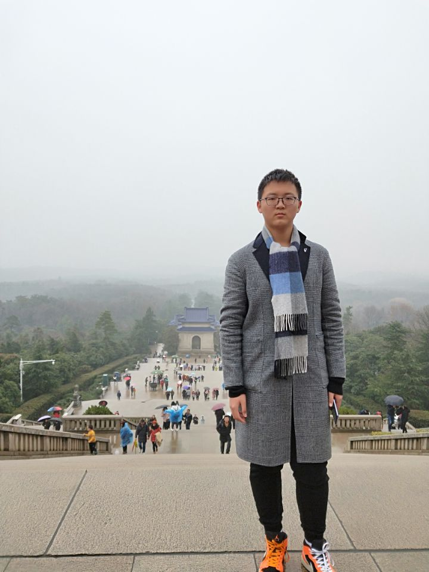

我叫许汪洋，差一丢丢18岁，无法快乐游戏，来自陕西西安，我喜欢读书与听音乐，闲暇时我喜欢跟朋友们打羽毛球，高中曾参加模联社团，擅长磋商与谈判，朋友遍布四海。前工业设计现大数据科学与技术专业，英语很菜但正在努力练习，作为计算机专业学生，我可以说是除了计算机什么都会，这也是我来学计算机的原因，希望在北理与大家一起进步最后补充一下大数据yyds，赵老师yyds.
My name is Xu Wangyang. I am almost 18 years old who cannot play games happily. I come from Xi 'an, Shaanxi province. I like reading and listening to music. In my spare time, I like playing badminton with my friends.I once participated in the Model United Nations association in high school. I am good at negotiation and have friends all over the world.Former industrial design is now big data science and technology major, English is very poor but is trying to practice, as a computer major student, I can say that in addition to the computer what will, this is also the reason I come to learn computer, I hope in the North science and everyone progress together finally add, big data is yyds, Mr.Zhao is yyds.